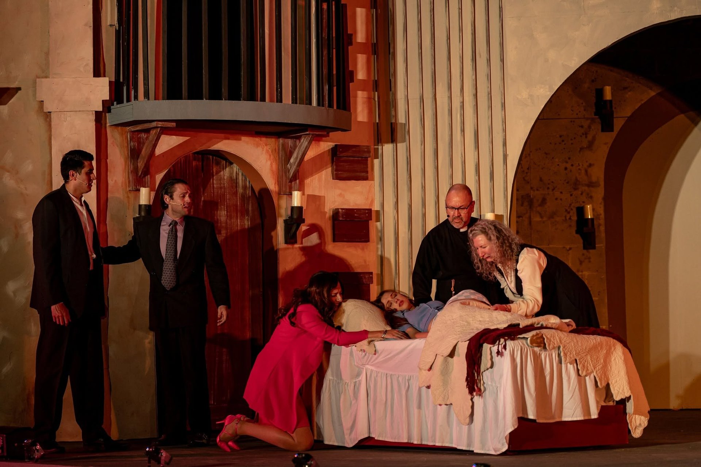

ATAC-recognized work
Featured roles
 ★ ATAC Win
★ ATAC Win
The Boys in the Band
Harold
Classic Theatre of San Antonio
Mart Crowley's landmark 1968 drama about a gathering of gay men in New York City.
Harold — the most self-possessed, cutting, and ultimately tender figure in the room —
is a role demanding equal measures of wit, cruelty, and heartbreak.
Outstanding Performance by a Supporting Actor in a Drama — 33rd ATAC Globe Awards

★ ATAC WinRomeo and Juliet
Lord Capulet
Classic Theatre of San Antonio — Shakespeare in the Park
An outdoor production set in contemporary Verona, Shakespeare in the Park style.
Capulet's arc from prideful patriarch to shattered father offers some of the play's
most demanding emotional terrain, performed under the open San Antonio sky.
Outstanding Performance by an Actor — 34th ATAC Globe Awards
Peter and the Starcatcher
ATAC Nominated
Peter and the Starcatcher
Smee
Classic Theatre of San Antonio
Rick Elice's Tony Award–winning reimagining of the Peter Pan origin story.
Smee — the faithful, bumbling, and strangely sympathetic first mate — is a role
built for physical comedy and precise ensemble timing.
Outstanding Performance by a Supporting Actor in a Comedy — 32nd ATAC Globe Awards
A Christmas Carol
ATAC Nominated
A Christmas Carol, A Ghost Story
Fred / Young Scrooge
San Pedro Playhouse
A locally-written adaptation by Tim Hedgepeth and Anthony Ciaravino,
produced as a fully bilingual ASL/English production featuring ASL shadow
performances. Blake performed significant portions of the role in American
Sign Language alongside the spoken text — a demanding layer of physicality
and precision on top of an already rich dual role. December 2023.
Outstanding Performance by a Supporting Actor in a Drama — 33rd ATAC Globe Awards
Jersey Boys
ATAC Nominated
Jersey Boys
Bob Crewe
San Pedro Playhouse
The Tony Award–winning musical biography of The Four Seasons.
Bob Crewe — the flamboyant, visionary producer who shaped Frankie Valli's
sound — is a showman's role demanding charisma and precise comic timing.
Outstanding Performance by an Actor — 34th ATAC Globe Awards

The Normal Heart
Ned Weeks
La Bête Productions
Larry Kramer's searing 1985 drama about the earliest days of the AIDS crisis
in New York City. Ned Weeks — the furious, grieving, uncompromising activist
at the center of the story — is one of the great leading roles in American drama.
La Bête Productions